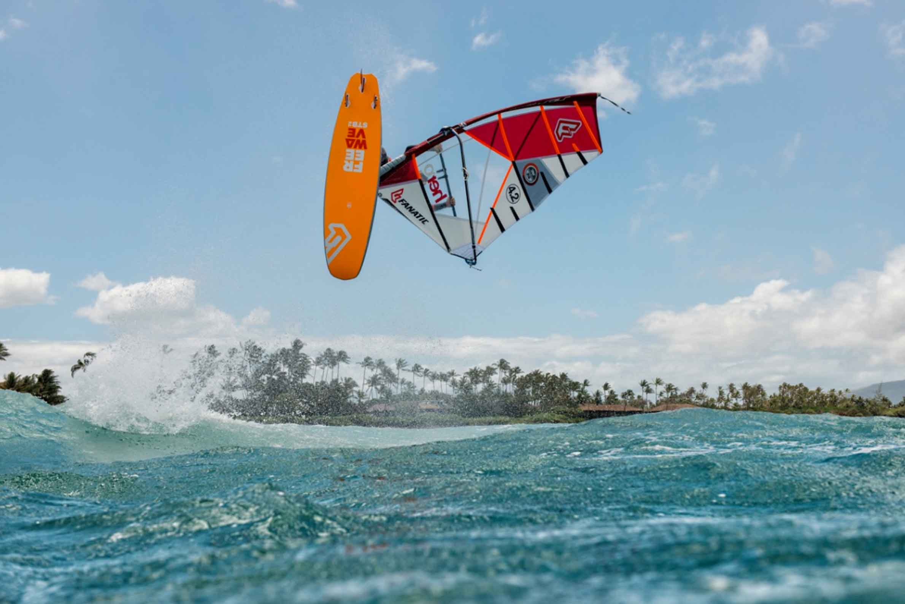
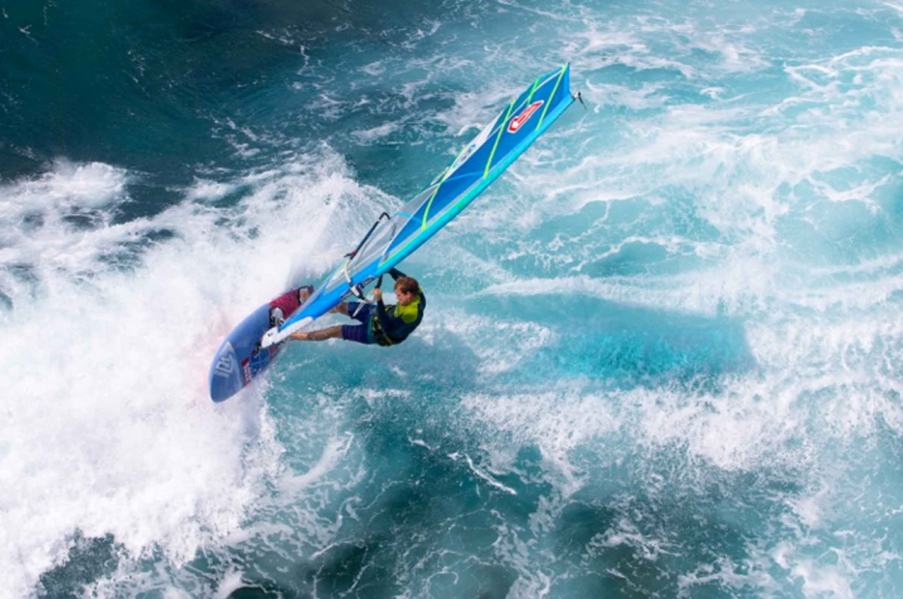

Freewaves 2017
Well last year we got the Stubby wave range, this year we get the Stubby Freewave range! And a lot of sense it makes too! We haven’t had a chance to try one yet, but with the early planing and ease of sailing qualities that this shape has brought to the wave range, it’s surely got to be a perfect match to a Freewave design? As soon as we get a chance to try one, we will let you know! The Freewave Stubby will also be offered in Fanatic very exclusive TXTR construction as well as in Team Edition.
If you’re still a bit nervous about Stubby’s then you will be reassured to hear that Fanatic have retained their highly regarded regular shaped Freewave range as well. It will definitely be interesting to see how the new Stubby shape stacks up against this. If I was a betting man, I would go with the Stubby!

Waveboards
Fanatic continue with their 3 ranges for 2017; Quad, Triwave and Stubby. Nip over to Boardseeker to read how these boards stack up against each other. Essentially, all three ranges get new paint jobs. The Quad gets new fins, the Triwave is largely unchanged and the Stubby gets a 99 litre big brother as well as new fins.
If you haven’t tried a Stubby yet, you really should. The shape might look awkward, but on the water, they are anything but. They are super fun, very easy to sail (easier than a regular wave board thanks to the wider tail) and really make the most of poorer conditions.
For more info check the Fanatic website where they also have 3D animations of all the new models!